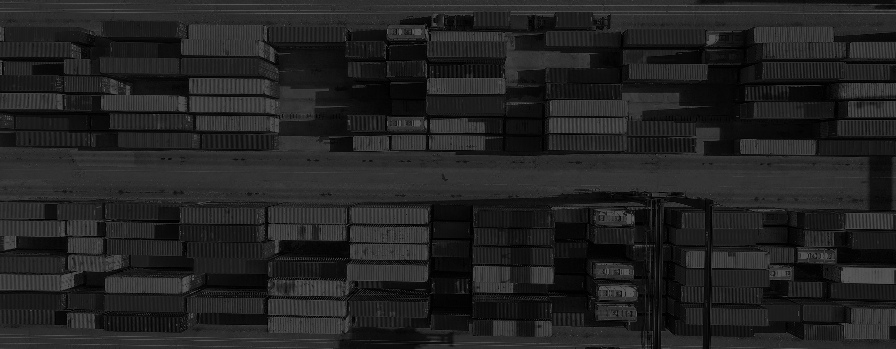
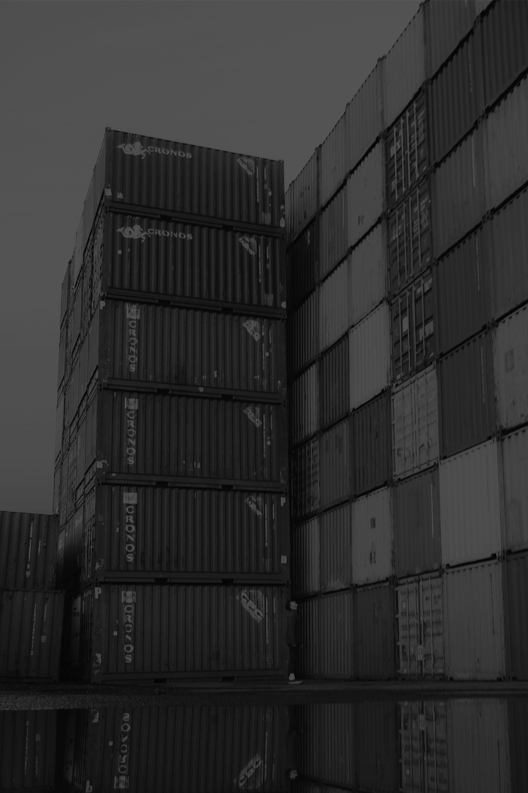

Наша компания «ЭЛАЙН Логистикс» осуществляет полный комплекс транспортно-логистических услуг, связанных с контейнерными перевозками по России и за рубеж. Одним из лидирующих наших направлений контейнерных перевозок является организация транспортно-экспедиторского обслуживания в г.Сыктывкаре и на территории Республики Коми.
Наша компания «ЭЛАЙН Логистикс» имеет в собственности свой парк 20фут и 40фут контейнеров и парк 80фут фитинговых платформ, за счет чего мы всегда предлагаем своим клиентам оптимальное ценовое решение по доставке продукции в собственных контейнерах, что позволяет нашим клиентам расширить географию сбыта и значительно удешевить транспортные затраты по сравнению с перевозками другими видами транспорта.
Мы принимаем Ваши собственные платформы любой базности и собственные 20/40-футовые контейнеры в любом количестве с отправкой со ст.Койты и ст.Сыктывкар СевЖД на основные направления, такие как: Москва, Хабаровск, Уссурийск, Чита, Владивосток, Благовещенск, Базаиха, Батарейная, Клещиха, Челябинск, Комсомольск-на-Амуре, Южно-Сахалинск, Магадан, Петропавловск-Камчатский, Якутск и многие другие.
Все прибывающие контейнера мы размещаем на контейнерный терминал и досматриваем их на пригодность к погрузке. В случае необходимости производим ремонт контейнеров.
ООО «ЭЛАЙН Логистикс» оперирует собственным парком автоконтейнеровозов со специализированными полуприцепами для перевозки контейнеров любых типов (20/40/45фут) по Сыктывкару, Республике Коми и соседним субъектам РФ.
Мы предлагаем самый широкий спектр услуг по автомобильным грузоперевозкам контейнеров и гарантируем своим клиентам, что перевозка будет выполнена максимально точно и быстро.
Одним из новых направлений нашей компании «ЭЛАЙН Логистикс» является организация отправок контейнерных поездов со ст.Сыктывкар Северной ЖД на экспорт в Китай. Многолетний опыт работы в контейнерном бизнесе, слаженная команда и высокий профессионализм наших сотрудников, полная техническая оснащенность, прямое взаимодействие с РЖД, качество сервиса и чёткая организованность формирования и отправки контейнерных поездов строго по расписанию позволили нам добиться значительного успеха в освоении данного пилотного проекта с последующим переходом в регулярный сервис.
Стоимость и скорость — важнейшие критерии перевозки для грузоотправителя. Транспортировка ускоренными контейнерными поездами значительно дешевле повагонных отправок, позволяет избежать сортировок товаров на станциях, а также гарантирует соблюдение сроков доставки грузов. Ускоренными контейнерными поездами можно перевозить практически любые виды грузов. Выбор в пользу контейнерных поездов делают производители бумаги, пиломатериалов Республики Коми.
Мы оказываем терминально-складской комплекс услуг по приему, перевалке, погрузке любых грузов клиента в г.Сыктывкаре.